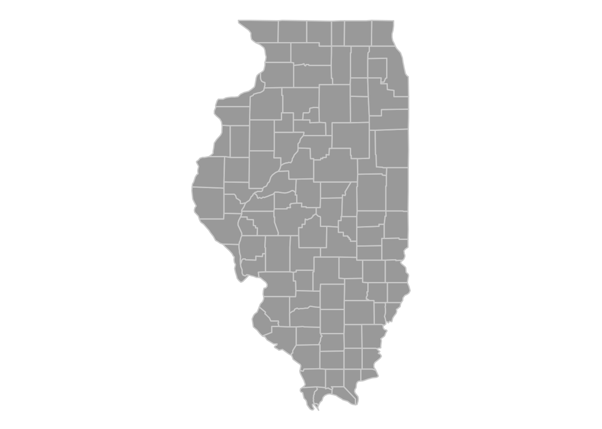
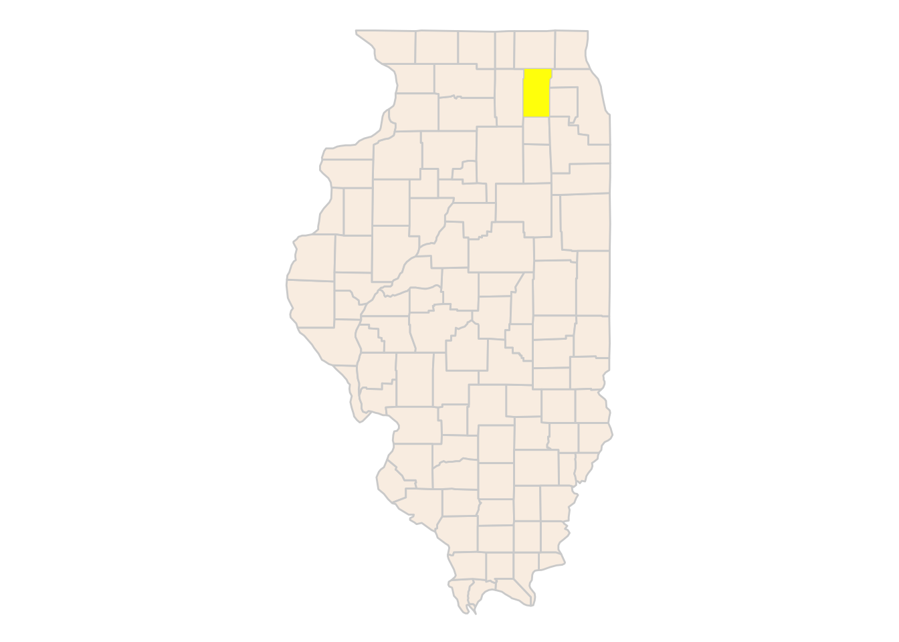
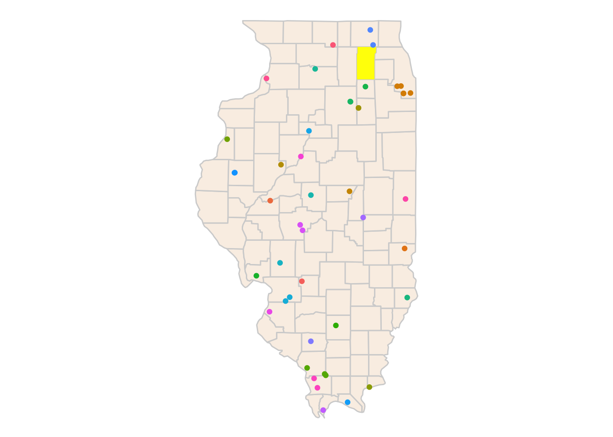
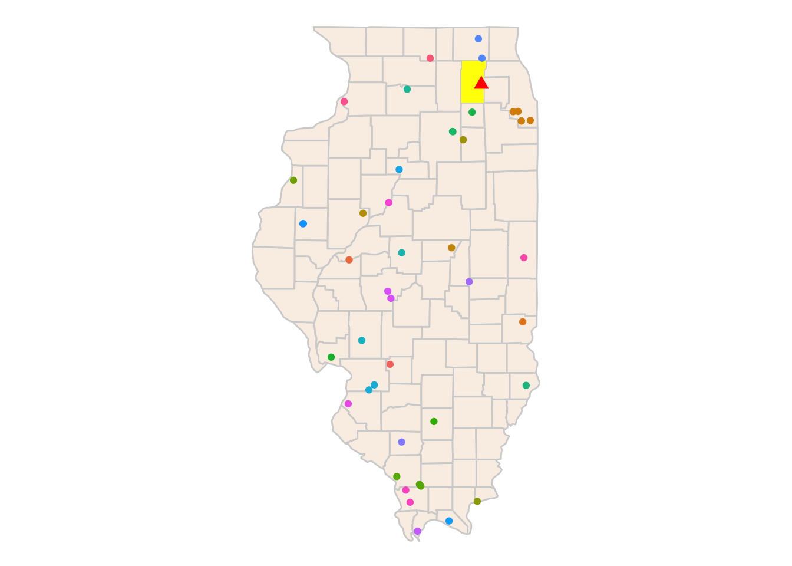
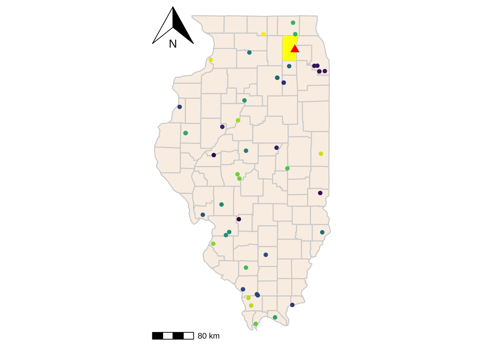

#load libraries
#| warning: false
#| messgae: false
library(tidyverse)
library(here)
library(maps)
library(mapdata)
library(mapproj)
library(ggmap)
library(tidytuesdayR)
library(emojifont)
library(ggspatial)Week 7 Homework
Introduction
This Quarto doc is to do the homework: making a map with some Tiny Tuesday data.
First I need to load my libraries
Then I can read in the data I chose: BIGFOOT 👣
#Read in data
#| warning: false
#| messgae: false
tuesdata <- tidytuesdayR::tt_load('2022-09-13')
tuesdata <- tidytuesdayR::tt_load(2022, week = 37)
bigfoot <- tuesdata$bigfoot%>%
write_csv((here("Week_07", "Data", "bigfoot.csv")) )#Look at data
View(bigfoot)Data Analysis
I want to see where Bigfoot sightings have occurred by county in Illinois, my home state. I need to
- make a map of Illinois - change the data so the column county matches
- join the data
- overlay the sightings as a point layer? or heat map?
- make map pretty
This chunk is for figuring out how to isolate and map Illinois
#|message: false
#|warning: false
#Actually want to look at just Illinois
states<-map_data("state")
head(states) long lat group order region subregion
1 -87.46201 30.38968 1 1 alabama <NA>
2 -87.48493 30.37249 1 2 alabama <NA>
3 -87.52503 30.37249 1 3 alabama <NA>
4 -87.53076 30.33239 1 4 alabama <NA>
5 -87.57087 30.32665 1 5 alabama <NA>
6 -87.58806 30.32665 1 6 alabama <NA>county<-map_data("county")
head(county) long lat group order region subregion
1 -86.50517 32.34920 1 1 alabama autauga
2 -86.53382 32.35493 1 2 alabama autauga
3 -86.54527 32.36639 1 3 alabama autauga
4 -86.55673 32.37785 1 4 alabama autauga
5 -86.57966 32.38357 1 5 alabama autauga
6 -86.59111 32.37785 1 6 alabama autaugaillinois<-county%>%
filter(region=="illinois")Now map it
ggplot()+
geom_polygon(data=illinois, aes(x=long,y=lat, group=group),fill="darkgrey",color="lightgrey")+
guides(fill=FALSE)+
coord_map()+
theme_void()
Actually want to emphasize my own county
kane<-county%>%
filter(region=="illinois")%>% #filter for Illinois and Kane County
filter(subregion == "kane")
#map just the county to check
ggplot()+
geom_polygon(data=kane, aes(x=long,y=lat, group=group))+
guides(fill=FALSE)+
coord_map()+
theme_void()Include highlighted county data on Illinois map
ggplot()+
geom_polygon(data=illinois, aes(x=long,y=lat,group=group,),fill = "linen", color="lightgrey")+
geom_polygon(data=kane, aes(x=long,y=lat,group=group),fill="yellow")+
coord_map()+
theme_void()
Figure out how to fix up this bigfoot data
#only care about state and county, lat and long
bigfoot_clean<-bigfoot%>%
drop_na()%>%
select(state,county,latitude,longitude)%>% #select data wee need
filter(state=="Illinois")%>%
filter(longitude!="-86.13757") #got rid of random typo longitude that made a floating pointFind data for Illinois
head(county) long lat group order region subregion
1 -86.50517 32.34920 1 1 alabama autauga
2 -86.53382 32.35493 1 2 alabama autauga
3 -86.54527 32.36639 1 3 alabama autauga
4 -86.55673 32.37785 1 4 alabama autauga
5 -86.57966 32.38357 1 5 alabama autauga
6 -86.59111 32.37785 1 6 alabama autaugahead(bigfoot_clean) #using these to double check the column names # A tibble: 6 × 4
state county latitude longitude
<chr> <chr> <dbl> <dbl>
1 Illinois Winnebago County 42.2 -89.0
2 Illinois Sangamon County 39.7 -89.6
3 Illinois Sangamon County 39.7 -89.6
4 Illinois St. Clair County 38.5 -90.2
5 Illinois Tazewell County 40.7 -89.6
6 Illinois Union County 37.6 -89.4Bigfoot_illinois<-bigfoot_clean%>%
rename(region=state, subregion=county)%>% #change column names to match
left_join(county, bigfoot_clean, by=c("region"))%>%
write_csv(here("Week_07", "Output", "Bigfoot_illinois.csv"))
#View(Bigfoot_illinois)Now I can put the Bigfoot sightings data on top of the map I made
ggplot()+
geom_polygon(data=illinois, aes(x=long,y=lat,group=group,),fill = "linen", color="lightgrey")+
geom_polygon(data=kane, aes(x=long,y=lat,group=group),fill="yellow")+
geom_point(data=Bigfoot_illinois,
aes(x=longitude, y=latitude, color=subregion.x))+ #colored points by county
guides(color="none")+
coord_map()+
theme_void()
I decided I wanted to include my hometown as well, so this chunk explores how to add another point to the map.
#Now an attempt to add a fun point where I grew up
geocode("Saint Charles, IL")# A tibble: 1 × 2
lon lat
<dbl> <dbl>
1 -88.3 41.9#long= -88.30869 and lat= 41.91419
StCharles<-data.frame(long= -88.30869, lat=41.91419, name="home") #Make a point on my hometownAll together now
#Same code as above to see if adding this point works
ggplot()+
geom_polygon(data=illinois, aes(x=long,y=lat,group=group,),fill = "linen", color="lightgrey")+
geom_polygon(data=kane, aes(x=long,y=lat,group=group),fill="yellow")+
geom_point(data=Bigfoot_illinois,
aes(x=longitude, y=latitude, color=subregion.x))+
guides(color="none")+
geom_point(data=StCharles,aes(x=long, y=lat),shape="triangle", color="red",fill="red", size=3)+
coord_map()+
theme_void()
Create final map
ggplot()+
geom_polygon(data=illinois, aes(x=long,y=lat,group=group,),fill = "linen", color="lightgrey")+
geom_polygon(data=kane, aes(x=long,y=lat,group=group),fill="yellow")+
geom_point(data=Bigfoot_illinois,
aes(x=longitude, y=latitude, color=subregion.x))+
guides(color="none")+
geom_point(data=StCharles,aes(x=long, y=lat),shape="triangle", color="red",fill="red", size=3)+
coord_map()+
theme_void()+
scale_color_viridis_d()+
annotation_scale(bar_cols=c("black","white"),
location="bl")+ #puts scale bar in bottom left
annotation_north_arrow(location="tl")+ #puts direction arrow top left
coord_sf(crs=4326) #GPS coordinate reference system- this is typical but depends on gps
ggsave(here("Week_07","Output","Bigfoot_IL.pdf"))

Summary:
This map, Figure 1 shows recorded Bigfoot Sightings in Illinois, and how close my hometown is to them. It includes a north arrow and a scale bar as well.